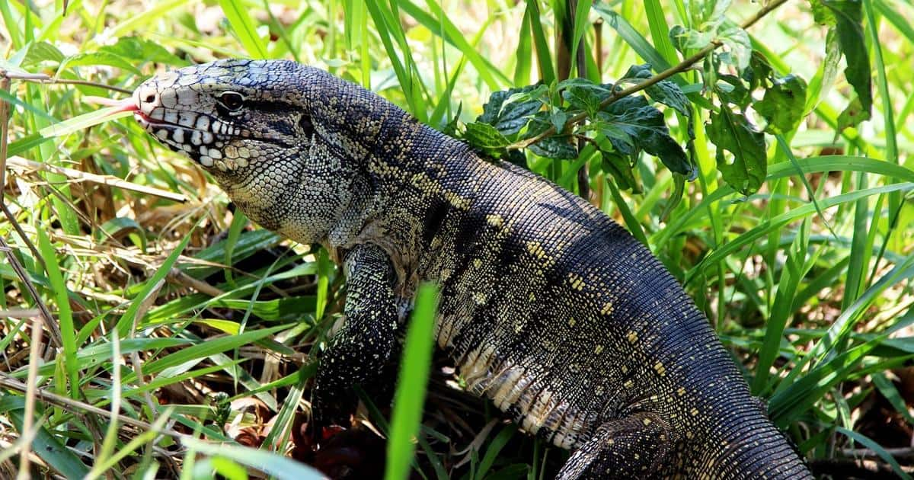
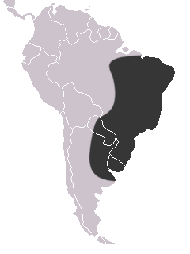

Teiú comum
Nome científico: (Salvator merianae Linnaeus, 1758)
Nome comum: Teiú comum.
Classificação biológica:
Domínio: Eukaryota.
Reino: Animalia.
Filo: Chordata.
Classe: Reptilia.
Ordem: Squamata.
Família: Teiidae.
Gênero: Salvator.
Espécie: Salvator merianae.
Nutrição: Onívoro.
Hábitos alimentares: Alimenta-se de pequenos vertebrados, insetos, ovos, frutas e matéria vegetal.
Morfologia do corpo: Possui corpo alongado, cauda robusta e patas fortes. Sua coloração é predominantemente preta com manchas brancas ou amareladas. Pode atingir até 1,5 metro de comprimento.
Comportamento: Animal terrestre e diurno, conhecido por sua agilidade e força. Pode se esconder em buracos e fendas para se proteger de predadores.
Principais Presas: Pequenos vertebrados, insetos, ovos, frutas e vegetação.
Principais Predadores: Aves de rapina, serpentes e mamíferos carnívoros.
Locais habitados
Distribuição:Biomas Cerrado, Mata Atlântica, Pantanal, Caatinga e Amazônia
Habitat: Habita florestas tropicais, cerrados, áreas abertas e até regiões urbanizadas.
Reprodução: Ovíparo, com fêmeas depositando entre 10 e 30 ovos por ninhada. A incubação dura cerca de 60 dias.